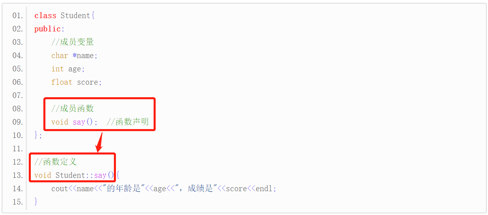

【本文结构】
- 类的定义和对象的创建
- 类的成员变量和成员函数
- 类成员的访问权限和类的封装
- 对象的内存模型
- C++函数编译原理和成员函数的实现
- 类：类是创建对象的模板，一个类可以创建多个对象，每个对象都是类类型的一个变量； 创建对象的过程也叫类的实例化。
- 类可以理解为一种新的数据类型，其创建的对象是变量。
- 类的成员：
- 成员变量：也有将类的成员变量称为类的属性（Property）
- 成员函数：也有将类的成员函数称为类的方法（Method）
- 在面向对象的编程语言中，经常把函数（Function）称为方法（Method）。
- 类的定义
- 类名的首字母一般大写，以和其他的标识符区分开。
- 由{ }包围起来的部分有时也称为类体，和函数体的概念类似。
- 注意在类定义的最后有一个分号 ; ，它是类定义的一部分，表示类定义结束了，不能省略。
- 类只是一个模板（Template），编译后不占用内存空间，所以在定义类时不能对成员变量进行初始化，因为没有地方存储数据。只有在创建对象以后才会给成员变量分配内存，这个时候就可以赋值了。
- 类通常定义在函数外面，当然也可以定义在函数内部，不过很少这样使用。
//定义 Student 类
class Student{
public:
//成员变量
char *name;
int age;
float score;
//成员函数
void say()
{
cout<<name<<"的年龄是"<<age<<"，成绩是"<<score<<endl;
}
};
- 创建对象
- 在创建对象时，class 关键字可要可不要，但是出于习惯我们通常会省略掉 class 关键字。
- 这种方式创建的对象 stu 是在栈上分配内存
class Student LiLei;
//或省略掉 class 关键字
Student LiLei;
- 除了创建单个对象，还可以创建对象数组：
Student allStu[100]; //该语句创建了一个 allStu 数组，它拥有100个元素，每个元素都是 Student 类型的对象。
- 访问类的成员
- 创建对象以后，可以使用点号 . 来访问成员变量和成员函数。（ 这和通过结构体变量来访问它的成员类似）
stu.score = 92.5f;
stu.say();
- 使用对象指针访问
- 上面代码中创建的对象 stu 在栈上分配内存，需要使用 & 获取它的地址：
Student stu;
Student *pStu = &stu; //pStu 是一个指针，它指向 Student 类型的数据，也就是通过 Student 创建出来的对象。
- 我们也可以使用new关键字来在堆上（分配内存）创建对象
Student *pStu = new Student; //通过 new 创建出来的对象是在堆上分配内存，没有名字
- 在栈上创建出来的对象都有一个名字，比如 stu，使用指针指向它不是必须的。
- 使用 new 在堆上创建出来的对象是匿名的，没法直接使用，必须要用一个指针指向它，再借助指针来访问它的成员变量或成员函数。
- 在实际开发中，new 和 delete 往往成对出现，以保证及时删除不再使用的对象，防止无用内存堆积。
- 有了对象指针后，可以通过箭头 -> 来访问对象的成员变量和成员函数。（ 这和通过结构体指针来访问它的成员类似）
int main()
{
Student *pStu = new Student;
pStu -> name = "小明";
pStu -> age = 15;
pStu -> score = 92.5f;
pStu -> say();
delete pStu; //删除对象
return 0;
}
- 成员变量
- 类的成员变量和普通变量一样，也有数据类型和名称，占用固定长度的内存。
- 在定义类的时候不能对成员变量赋值，因为类只是一种数据类型或者说是一种模板，本身不占用内存空间，而变量的值则需要内存来存储。
- 成员函数
- 类的成员函数也和普通函数一样，都有返回值和参数列表，它与一般函数的区别是：
- 成员函数是一个类的成员，出现在类体中，它的作用范围由类来决定；
- 普通函数是独立的，作用范围是全局的，或位于某个命名空间内。
- 成员函数定义的位置
- 在类体内定义
- 在类体外定义
- 必须在函数名前面加上类名予以限定。 :: 被称为域解析符（也称作用域运算符或作用域限定符），用来连接类名和函数名，指明当前函数属于哪个类。
- 成员函数必须先在类体中作原型声明，然后在类外定义，也就是说类体的位置应在函数定义之前。

- 在类体内和类体外定义成员函数的区别
- 在类体内定义的成员函数会自动成为内联函数，在类体外定义的不会。
- 当然，在类体内部定义的函数也可以加 inline 关键字，但这是多余的，因为类体内部定义的函数默认就是内联函数。
- 内联函数一般不是我们所期望的，它会将函数调用处用函数体替代，所以我建议在类体内部对成员函数作声明，而在类体外部进行定义，这是一种良好的编程习惯，实际开发中大家也是这样做的。
- 当然，如果你的函数比较短小，希望定义为内联函数，那也没有什么不妥的。
- 如果你既希望将函数定义在类体外部，又希望它是内联函数，那么可以在定义函数时加 inline 关键字。

- 当然，你也可以在函数声明处加 inline，不过这样做没有效果，编译器会忽略函数声明处的 inline。
- 这种在类体外定义 inline 函数的方式，必须将类的定义和成员函数的定义都放在同一个头文件中（或者同一个源文件中），否则编译时无法进行嵌入（将函数代码的嵌入到函数调用出）
- 再次强调，虽然 C++ 支持将内联函数定义在类的外部，但我强烈建议将内联函数定义在类的内部，这样它会自动成为内联函数，何必费力不讨好地将它定义在类的外部呢，这样并没有任何优势。
- 所谓访问权限，就是你能不能使用该类中的成员。
- 成员访问限定符
- public：公有的
- protected：受保护的
- private：私有的
- 在类的内部（定义类的代码内部），无论成员被声明为 public、protected 还是 private，都是可以互相访问的，没有访问权限的限制。
- 成员变量大都以m_开头，这是约定成俗的写法，不是语法规定的内容。以m_开头既可以一眼看出这是成员变量，又可以和成员函数中的形参名字区分开。
- 给成员变量赋值的函数通常称为 set 函数，它们的名字通常以set开头，后跟成员变量的名字；读取成员变量的值的函数通常称为 get 函数，它们的名字通常以get开头，后跟成员变量的名字。
- 除了 set 函数和 get 函数，在创建对象时还可以调用构造函数来初始化各个成员变量。
- 简谈类的封装
- 根据C++软件设计规范，实际项目开发中的成员变量以及只在类内部使用的成员函数（只被成员函数调用的成员函数）都建议声明为 private，而只将允许通过对象调用的成员函数声明为 public。
- 这种将成员变量声明为 private、将部分成员函数声明为 public 的做法体现了类的封装性。所谓封装，是指尽量隐藏类的内部实现，只向用户提供有用的成员函数。
- 有读者可能会说，额外添加 set 函数和 get 函数多麻烦，直接将成员变量设置为 public 多省事！确实，这样做 99.9% 的情况下都不是一种错误，我也不认为这样做有什么不妥；但是，将成员变量设置为 private 是一种软件设计规范，尤其是在大中型项目中，还是请大家尽量遵守这一原则。
- 其它说明
- 声明为 private 的成员和声明为 public 的成员的次序任意，既可以先出现 private 部分，也可以先出现 public 部分。如果既不写 private 也不写 public，就默认为 private。
- 在一个类体中，private 和 public 可以分别出现多次。每个部分的有效范围到出现另一个访问限定符或类体结束时（最后一个右花括号）为止。但是为了使程序清晰，应该养成这样的习惯，使每一种成员访问限定符在类定义体中只出现一次。
- 编译器会将成员变量和成员函数分开存储：分别为每个对象的成员变量分配内存，但是所有对象都共享同一段函数代码。
- 成员函数在代码区分配内存。
- 以创建10个对象为例：

- 对象的大小只受成员变量的影响，和成员函数没有关系。
- 类可以看做是一种复杂的数据类型，也可以使用 sizeof 求得该类型的大小。它的结果只计算了成员变量的大小，并没有把成员函数也包含在内。